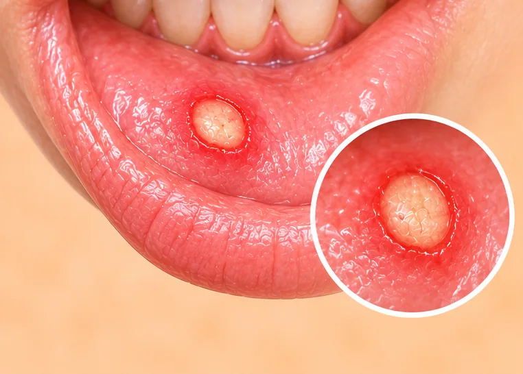
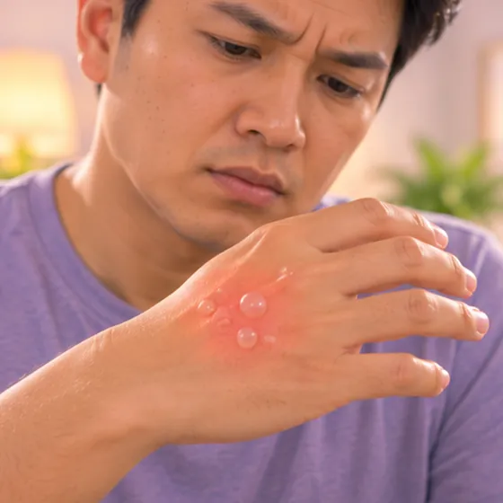

口唇疱疹
嘴唇上或唇周出现疼痛的小水疱，由单纯疱疹病毒引起
这是什么
常见的病毒会引起嘴唇先刺痛，然后长出充满液体的小水疱，水疱会结痂并自行消退，但以后可能再次发作。
- 嘴唇上或唇周
- 身体不适或疲倦时易发作
- 先刺痛，然后起疼痛的水疱
- 就诊科室
- 家庭医生；若反复发作，可看皮肤科医生
- 多发人群
- 儿童和成人；很多人带有这种病毒却不自知
- 传染性
- 会传染，通过亲吻或共用杯子、毛巾、润唇膏，有水疱时尤其容易传染
- 病程
- 通常一到两周内会自行消退，但可能再次发作
常见表现

小水疱水疱 
发烧发热
其他症状
- 出现水疱前一天左右，嘴唇会有刺痛、发痒或灼热感
- 水疱破裂、渗液，然后结成黄褐色的痂
- 水疱周围疼痛或有触痛
为什么会这样

细菌或病毒感染感染性病因 
压力大心理压力
其他原因
- 第一次感染后，病毒会留在体内，以后可能再次活跃
- 免疫力弱或嘴唇皮肤受伤，也会更容易发作
出现这些情况请先看医生
- 高烧并伴有严重头痛、颈部僵硬或意识模糊：拨打999
- 婴儿出现水疱或发烧，或吃奶不好：立即去医院
- 眼睛疼痛、发红、流泪、怕光或视力模糊，或眼睛附近有水疱：今天就去医院
- 水疱大面积蔓延，尤其是有湿疹或免疫力弱的人：今天就看医生
- 水疱超过两周还没消退，或非常痛、很大，或经常复发
- 因疼痛无法喝水吃东西，或出现脱水迹象
如果有以上情况，请先看医生，再来做调理。
本页只是一般性的健康资讯。请继续按时服用平常的药物，并继续看医生。
请继续日常治疗
请继续按医嘱服药，并按时复诊。我们的调理是温和的辅助，不能代替医疗。
日常护理

勤洗手手卫生 
好好休息休息 
咨询药剂师药剂师建议
更多自我照顾的方法
- 有水疱时，不要亲吻别人，也不要共用杯子、毛巾、润唇膏或剃刀
- 水疱消退前，避免接触婴儿、湿疹患者和免疫力弱的人
告诉理疗师
- 发烧或正在感染
- 皮肤破损、发红或疼痛
- 癌症或正在治疗癌症
- 怀孕
- 心脏起搏器或金属植入物
调理师会在开始前和你确认这一项。
相关疾病
参考资料: General information based on public health sources such as Mayo Clinic, NHS, Cleveland Clinic and NCBI StatPearls.
页面更新: 2026-10-31